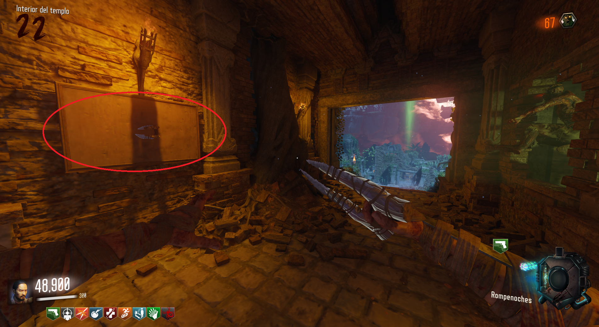
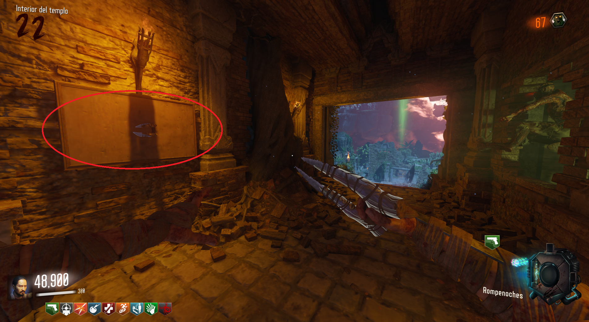

Armas Secretas (Revelations)

Contrareloj:
Necesitaremos COMPLETAR las rondas 5, 10, 15 y 20 en sus respectivos tiempos, 5, 12, 19 y 32 minutos.
Cada vez que conseguimos un arma, la podremos ir a buscar a esta pared entre Shangri-La y Der Eisendrachen.

Necesitaremos COMPLETAR las rondas 5, 10, 15 y 20 en sus respectivos tiempos, 5, 12, 19 y 32 minutos.
Cada vez que conseguimos un arma, la podremos ir a buscar a esta pared entre Shangri-La y Der Eisendrachen.
